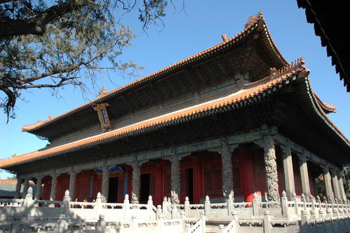
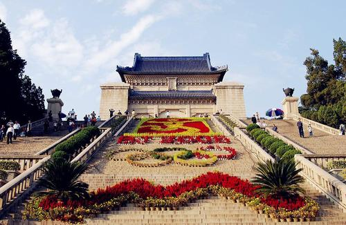

纪念性和点缀性建筑

简介
中国曲阜孔庙是世界上规模最大的纪念性建筑群；南京中山陵则是中国近代优秀的纪念性陵墓建筑
现代的纪念性建筑已经开始同某些使用功能结合起来，如纪念科学家的图书馆、纪念著名运动员的体育馆、纪念画家的美术馆和纪念作家的陈列馆等。
类型
纪念性建筑可以分为留念性的、历史性的和纪念性的。留念性建筑是指规模较小的碑、记事勒石等，历史性建筑包括一些具有重要历史意义而作为文物加以保护的建筑，故居、会址等。纪念性建筑则为规模较大的或专事兴建的纪念堂馆、陵墓、碑亭、牌坊凯旋门、纪念性雕塑和纪念苑等。纪念性建筑有庆祝性的、表彰性的、宜传性的、祭祀1的、墓莽性的，也有装饰性的和标志性的。这些建筑可以是单体建筑，也可以是群体建筑。
设计要点
主要是:①纪念性建筑往往要求庄重的外观和气氛，比一般建筑保存更长时间，因此常用石材、铸铁、铜、不锈钢等材料。②纪念性建筑中的陵墓有供后人举行纪念活动的作用，有的还须具有保存遗体的功能，例如莫斯科的列宁墓(见彩图)、北京毛主席纪念堂(见彩图)等陵墓建筑内，设有保存遗体的冷冻空调系统。③纪念性建筑须具有鲜明的思想内容和庄严、朴素的艺术造型,如北京的人民英雄纪念碑(见彩图)用中国传统的形式反映出中国近百年的革命史和中华民族开创历史新纪元的豪迈气概。日本人民在中国音乐家聂耳罹难地神奈川海滨，为他建造了一座形象独特的纪念碑。纪念碑是一块 平卧的碑体,酷似置于海滨的一只琴，仔细看去却是一个耳字，以巧妙的构思表达对这位音乐家的怀念。
典型建筑
中国曲阜孔庙

曲阜孔庙（Temple of Confucius， Qufu），又称“阙里至圣庙”，位于曲阜市中心鼓楼西侧300米处，是祭祀中国古代著名思想家和教育家孔子的祠庙。始建于鲁哀公十七年（前478年），历代增修扩建。
曲阜孔庙以孔子故居为庙，岁时奉祀。西汉以来历代帝王不断给孔子加封谥号，孔庙的规模也越来越大，成为全国规模最大的孔庙。现存的建筑群绝大部分是明、清两代完成的，占地327亩，前后九进院落。庙内有殿堂、坛阁和门坊等464间。四周围以红墙，四角配以角楼，是仿北京故宫样式修建的。与相邻的孔府、城北的孔林合称“三孔”。
曲阜孔庙被建筑学家梁思成称为世界建筑史上的“孤例”。1961年，国务院把“三孔”列为全国重点文物保护单位；1994年被联合国教科文组织列为“世界文化遗产” [1] 。现为国家AAAAA级景区，与北京故宫、承德避暑山庄并列为中国三大古建筑群； [2] 与南京夫子庙、北京孔庙和吉林文庙并称为中国四大文庙
建筑特点
主要格局
孔庙平面呈长方形，占地14万平方米 [21] ，南北长0.7公里 [22] 。孔庙沿一条南北中轴线展开布置，左右对称，布局严谨，共有九进院落，前有棂星门、圣时门、弘道门、大中门、同文门、奎文阁、十三御碑亭，从大圣门起，建筑分成三路：中路为大成门、杏坛、大成殿、寝殿、圣迹殿及两庑，分别是祭祀孔子以及先儒、先贤的场所；东路为崇圣门、诗礼堂、故井、鲁壁、崇圣词、家庙等，多是祭祀孔子上五代祖先的地方；西路为启圣门、金丝堂、启圣王殿、寝殿等建筑，是祭祀孔子父母的地方。
全庙共有五殿、一祠、一阁、一坛、两堂、十七碑亭、五十三门坊，共计有殿庑四百六十六间，分别建于金、元、明、清及民国时期。孔庙内最为著名的建筑有：棂星门、二门、奎文阁、杏坛、大成殿、寝殿、圣迹堂、诗礼堂等
空间分布
孔庙建筑空间还存在着一整套 礼的制约，建筑空间渗透着浓厚的伦理特性。唐宋时期，孔庙建筑单体己经高度程式化，组群规划布局基本也已成定制。孔庙建筑空间布局也自然遵循这些建筑思想，不仅要满足祭祀孔子的使用要求，而且严守繁褥的礼制规范和等级制度。使孔庙不在是简单平常的学习空间，更具有了特殊的场所精神的“复合”的空间。[24]
曲阜孔庙平面基本形制为其功能的发挥打下了基础，建筑空间布局以“大成殿”院落即“庙”的祭祀空间为整体建筑群落的核心，与内庭空间为次中心所产生的位置关系，构成两组不同功能的院落空间形式。曲阜孔庙整个建筑群自南至北由九进院落串联组成，它以最南端的权星门为起点，到北端的圣迹殿结束。曲阜孔庙的院落空间划分自古城学巷东西簧门外“德作天地”、“道冠古今"两座木牌坊开始。两座木牌坊一方面标示了孔庙建筑群的重要性质和至高等级:另一方面作为进入孔庙的引导，有效地渲染了孔庙建筑群入口的壮观气氛，突出强化了孔庙建筑群的庄严肃穆。孔庙建筑群整体及门面空间意蕴也由点题为“德俘天地”、“道冠古今”的两座木牌坊加强、展开。(24]
南京中山陵

历史由来
南京中山陵，是中国近代伟大的政治家孙中山先生的陵墓，它坐落在江苏省南京市东郊钟山东峰小茅山的南麓，西邻明孝陵，东毗灵谷寺，傍山而筑，由南往北沿中轴线逐渐升高，整个建筑群依山势而层层上升，气势宏伟。
1925年3月12日，孙中山在北京逝世，遵照他生前安葬在钟山的遗愿，灵柩暂停放在北京香山碧云寺内， 并决定在南京钟山修建他的陵墓。自1926年春动工，至1929年夏建成。
主体建筑
南京中山陵主要建筑有：牌坊、墓道、陵门、碑亭、祭堂和墓室等。从空中往下看，中山陵像一座平卧在绿绒毯上的“自由钟”。山下中山先生铜像是钟的尖顶，半月形广场是钟顶圆弧，而陵墓顶端墓室的半球形的穹隆顶，就像一颗溜圆的钟摆锤，广场南端的鼎台(现改为中山先生的立像)为大钟的钟纽，“鼎”在古代是权力的象征，因此整个大钟乃含“唤起民众，以建民国”之意。孙中山的立像英姿勃勃，摆动的手势好像正在发表关系国家命运的演说。
布局结构
最高的平台有华表两座，后为祭堂。华表乃为柱状标识物，标志祭堂即在此。祭堂有三个拱门，分书“民族”、“民权”、“民生”门额。这里是仿宫殿式的祭堂。祭堂的门楣上刻有孙中山手书“天地正气”四字，表达了孙中山先生奋斗的理想。
堂中有中山先生大理石坐像，高4.6米，逼真生动，是世界名雕刻家保罗兰窦斯基的杰作。像座东西四周有反映中山先生革命事迹的浮雕。祭堂东西护壁大理石刻着中山先生手书的遗著《建国大纲》和胡汉民等人书写的 <<总理遗嘱>>。
在这里，不仅使我们看到了孙中山先生为推翻两千多年来封建帝制的不朽勋业和艰苦斗争的历程，而且也看到了孙中山先生为我中华独立、富强、大展宏图的建国思想。堂后有墓门二重，两扇前门用铜制成，门框则以黑色大理石砌成。上有中山先生手书“浩气长存”横额。二重门为独扇铜制，门上镌有“孙中山先生之墓”石刻。进门为圆形墓室，直径18米，高11米。中央是长形墓穴，上面是中山先生汉白玉卧像，瞻仰者可围绕汉白玉栏杆俯视灵柩上的卧像，此像系捷克雕刻家高棋按遗体形象塑造，十分逼真。
下面安葬着孙中山先生的遗体。墓穴直径4米深5米，外用钢筋混凝土密封。南京解放后，刘伯承任市长时，特地从湖南运来2万株杉树和梧桐树，种植在这里。30多年来，中山陵园不断整修拓新，整个园林面积达3000多公顷。陵墓周围，郁郁葱葱，景色优美。中山陵是我国伟大的民主革命先行者孙中山的陵墓，位于南京紫金山中茅山南麓，陵墓的建筑，壮丽雄伟。到南京游览的人，一般都要到中山陵瞻仰这位革命家的墓地。孙中山先生虽然与世长辞，但是他浩气长存，永远为世人所敬仰。
重大意义
中山陵的建筑风格中西合壁，钟山的雄伟形势与各个牌坊、陵门、碑亭、祭堂和墓室，通过大片绿地和宽广的通天台阶，连成一个大的整体，显得十分庄严雄伟，既有深刻的含意，又显得十分庄严雄伟，更有宏伟的气势，设计非常成功，所以被誉为“中国近代建筑史上的第一陵”。